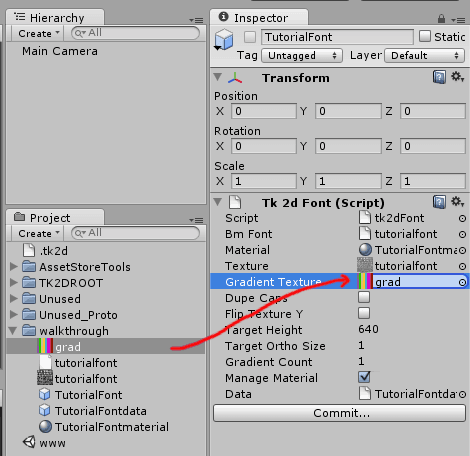
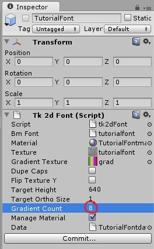
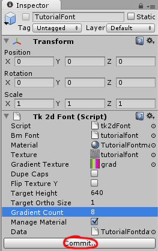
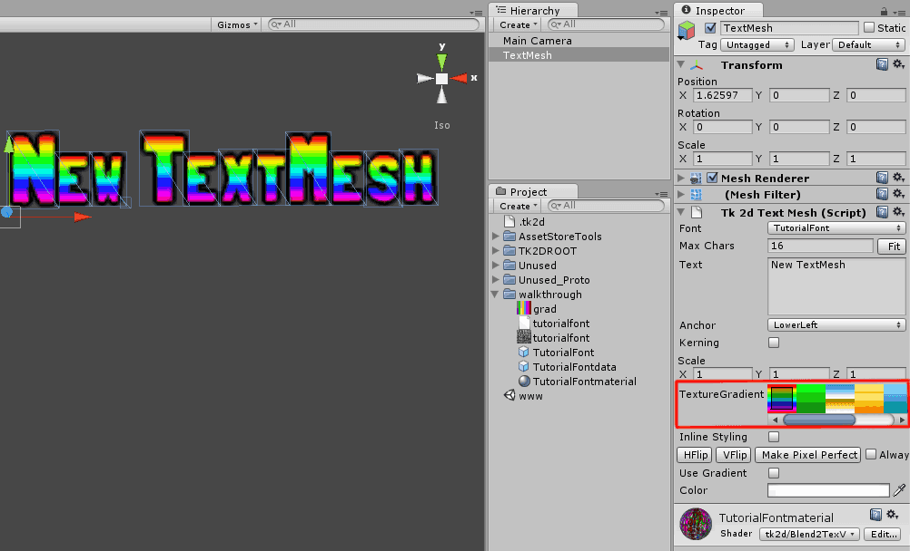
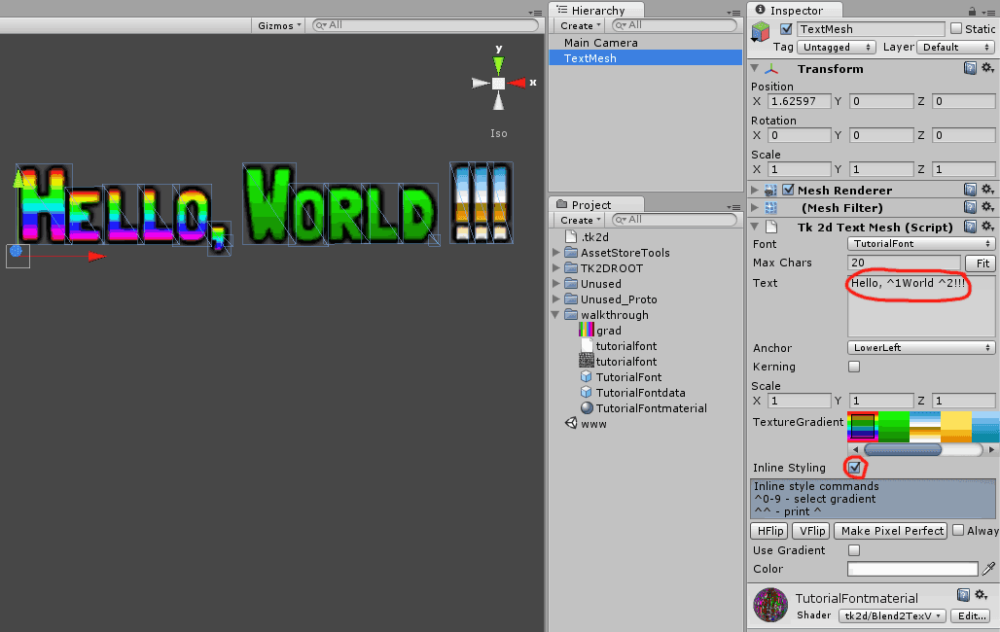

Documentation
Script Reference
Forum
Documentation
Script Reference
Forum
You can use the Gradients textures to create much higher quality gradients in 2D Toolkit. In addition to that, 2D Toolkit also supports inline style changes - changing gradient from within one textmesh.
Add a gradient to the TutorialFont created here.

This is the gradient file used in this example.
Set up the number of gradient tiles. In this example, our gradient image has 8 tiles.

Click commit. Any TextMeshes using this font will now use gradients.

Create a TextMesh in the scene and pick the TutorialFont. You will now be able to select gradients in addition to tinting the TextMesh using colors.

Tick the *Inline Styling * tick-box in the TextMesh inspector. You can use inline style changes to pick from the first 10 gradients. For example, you can enter Hello, ^1World ^2!!! and this will style the string as shown below.
Note: The default style is the gradient which is selected in the interface.

You can do this from scripts too, making this very powerful indeed.